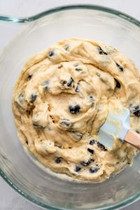
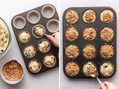

Nämä mustikkamuffinit ovat täydellinen yhdistelmä pehmeyttä ja marjaisaa makua. Helppo ja nopea resepti arkeen tai juhlaan!
Ainekset
- 3 dl vehnäjauhoja
- 1 ½ dl sokeria
- 1 tl leivinjauhetta
- 1 tl vaniljasokeria
- 1 dl maitoa
- 1 dl öljyä
- 2 munaa
- 2 dl mustikoita
Valmistusohjeet
1- Sekoita jauhot, sokeri, leivinjauhe ja vaniljasokeri kulhossa.
2- Vatkaa toisessa kulhossa munat, maito ja öljy.
3- Yhdistä seokset ja kääntele varovasti joukkoon mustikat.
4- Jaa taikina muffinivuokiin ja paista 200°C noin 15–20 minuuttia
Vaiheittaiset kuvat

